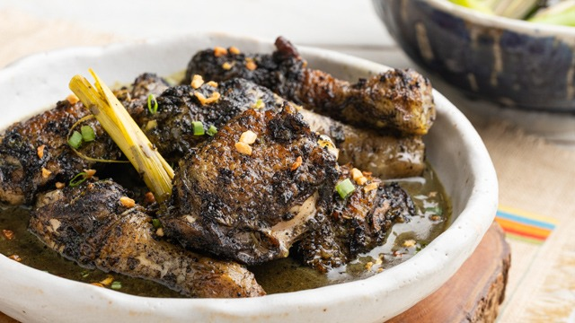

Piyanggang Chicken

Description
Piyanggang Chicken is a traditional Tausug dish made with chicken simmered in a rich, aromatic sauce. Its signature is the unique black charred coconut sauce, which gives the dish a smoky flavor and striking color.
Ingredients
- 1 whole chicken, cut into serving pieces
- 2 cups grated coconut
- 1 onion, chopped
- 5 cloves garlic, minced
- 1 thumb-sized piece of ginger, minced
- 2 stalks lemongrass, bruised
- 2 tablespoons turmeric powder
- 2 to 3 chili peppers, sliced
- 1 cup coconut milk
- Salt and pepper to taste
Steps
- Toast the grated coconut in a dry pan over medium heat until deeply browned and nearly black, stirring often.
- Grind or blend the charred coconut with the onion, garlic, ginger, turmeric, and chili peppers to make a thick paste.
- Season the chicken with salt and pepper, then sear it in a pot until lightly browned.
- Add the coconut paste and lemongrass, stirring to coat the chicken.
- Pour in the coconut milk, cover the pot, and simmer until the chicken is tender and the sauce is thick.
- Adjust the seasoning and serve the Piyanggang Chicken hot with steamed rice.